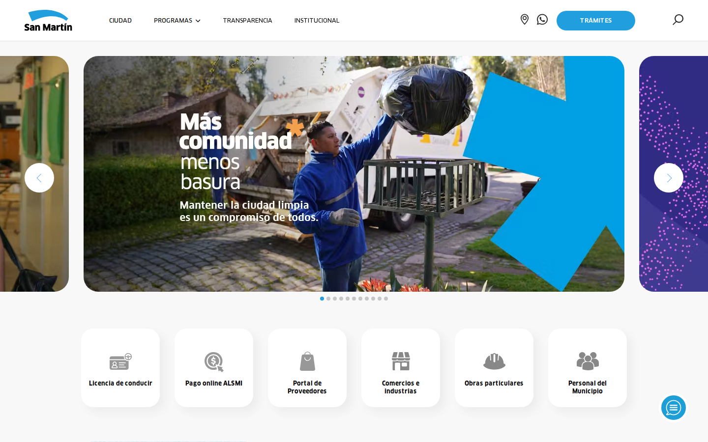
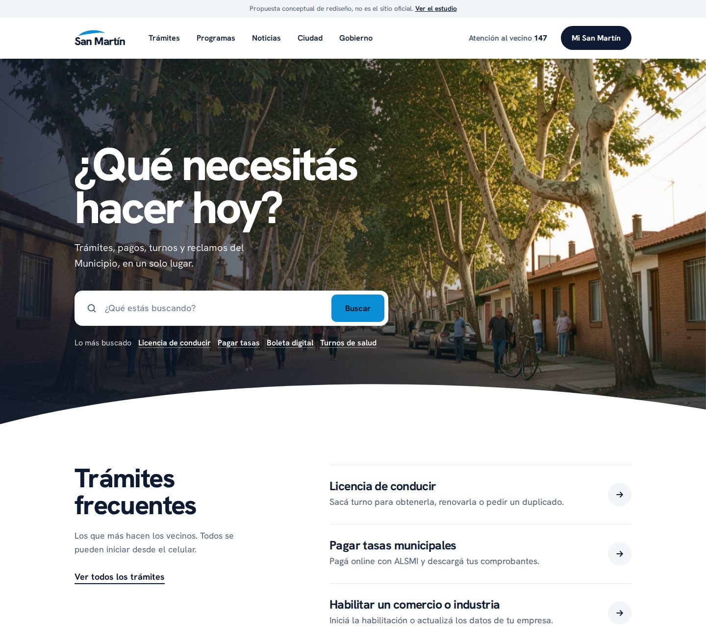

Diagnóstico do sanmartin.gob.ar, o que os melhores sites de governo fazem em 2026, e uma proposta de home no padrão de um projeto de US$ 10 mil.


A marca é boa (arco azul, asterisco laranja da campanha “Más comunidad*”), o conteúdo existe. O problema é a arquitetura: o site é organizado como vitrine de comunicação, não como balcão de serviços.
Referências: GOV.UK (padrão mundial), Colorado (Best Government Site 2026 no WebAward), Los Angeles, Denver, Utah, NYC, Chattanooga e Mississippi.
O cidadão chega com uma pergunta, não para navegar. Busca grande, no centro da primeira tela.
Utah, Denver, LA, OregonOrganizar por “o que quero fazer” e “quem eu sou”, não pelo organograma.
Colorado, Chattanooga, TulareSó os caminhos críticos; o resto fica para busca e subpáginas. Carrega rápido, cansa menos.
NYC, Los AngelesWCAG 2.2 AA: contraste 4,5:1, foco visível, teclado, texto real (não em imagem), fonte grande.
GOV.UK, Washington D.C.Pensado para quem paga uma taxa às 23h no celular com 20% de bateria.
Shadow Digital, 2026Fotos reais de pessoas e bairros; tipografia como ferramenta de navegação, não decoração.
Mississippi, Brevard, Saint PaulNão troca a marca, sobe o nível dela. O arco do logo vira o recorte entre as seções (como a onda do Helsinki Design System) e a moldura das fotos; o asterisco laranja da campanha aparece só em dois lugares. Uma família tipográfica, quase nenhuma borda, muito respiro.
Cielo#0A8FD6 marca, busca, campanha
Cielo texto#0667A8 links e categorias
Tinta#0E1B33 texto e blocos
Tinta 2#516074 texto secundário
Niebla#F3F6F9 fundos suaves
Naranja#F07F1A asterisco e foco
Grotesca aberta e humana, legível em tamanho pequeno e com peso de cartaz no 800. Substitui a FF Clan (paga) sem perder o tom da marca.
Título do hero, títulos de seção, itens de lista e texto corrido (base de 18px, entrelinha 1,6).
Faixa típica de agência para site institucional de governo local, com CMS. Estimativa de referência, não orçamento.
| Etapa | Entrega | Parcela |
|---|---|---|
| Descoberta | Análise de busca/analytics, entrevistas com vecinos, mapa das 20 tarefas mais feitas | US$ 1.200 |
| Arquitetura e conteúdo | Nova navegação por tarefa, reescrita das páginas de trámite em linguagem clara | US$ 1.800 |
| Design system | Tokens, componentes, home + 6 modelos de página, protótipo navegável | US$ 2.500 |
| Desenvolvimento | Front-end acessível sobre o CMS atual (Prismic), busca com sinônimos | US$ 3.500 |
| Acessibilidade e lançamento | Auditoria WCAG 2.2 AA, testes com leitor de tela, performance, treino da equipe | US$ 1.000 |